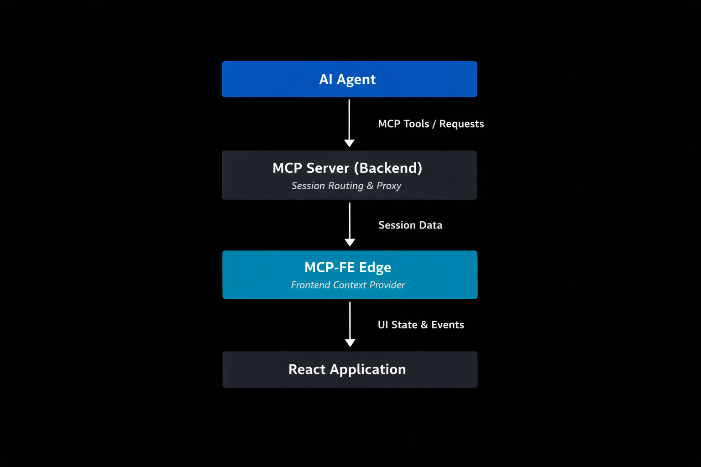

MCP-FrontEnd
Stop scraping HTML. Start querying runtime. Transform your web app into a high-fidelity context engine for AI Agents.
What is MCP-Frontend?
Current AI agents are Runtime-Blind. They interact with the web through a "straw"—using brittle screen scraping, slow vision models, or surface-level DOM analysis. They can see what a button looks like, but they don't know what it does, what's in the application state, or why an internal validation failed.
From "Guessing" to "Querying"
MCP-Frontend is the missing communication layer that transforms your web application from a passive UI into an Active Context Engine. By integrating it directly into your frontend code, you give AI agents a direct neural link to your app's internal runtime:
- Deep Context (The Eyes): Agents can query live React/Zustand state, read exact form values, and inspect user navigation history with 100% accuracy.
- Precise Actions (The Hands): Agents can programmatically navigate your app, fill complex forms, or trigger side-effects safely through your predefined, type-safe tools.
Built on the Model Context Protocol (MCP), this infrastructure is accessible both to in-browser agents natively, and to remote agents (like Claude Desktop or cloud-hosted bots) through our session-aware proxy server.
🌐 Aligned with WebMCP Standards
The emerging WebMCP specification is a future standard for browser-based AI. While it is currently experimental and limited to local contexts, MCP-Frontend bridges the gap today.
By using reliable Web APIs (SharedWorker, WebSockets), we provide a production-ready experience for both local and remote agents right now—no experimental flags required. As WebMCP matures, MCP-Frontend will seamlessly adopt it as a core transport layer.
The Current Reality of Browser-Based AI
Building AI agents that interact with web applications is currently a mess of trade-offs. Existing approaches fall short because they treat the UI as a static image or a flat document, ignoring the rich logic underneath.
The Evolution: Context-on-Demand
MCP-Frontend shifts the paradigm from guessing from HTML to querying the runtime. It’s the difference between trying to understand a car by looking at its shell and plugging into its OBD-II diagnostic port.
Where MCP-Frontend Shines
Stop treating AI as an external observer. Start building applications where the AI is an integrated collaborator that understands the context of every click.
Your agent knows what's in the database. With MCP-FE it also knows what the user is doing right now — which page they're on, what they've filled in, where they're stuck. Browser context is just another tool alongside the rest.
Agent calls get_current_page_state or get_form_progress and responds in context.
Instead of asking for screenshots, your support bot queries get_validation_errors or get_app_state.
It identifies why a user is stuck in seconds, not hours.
A new user is lost in a complex product. The agent sees exactly where they are, what they've already done, and guides them through the next step — no screenshots, no guessing.
Agent calls get_user_events to understand the journey so far and navigate_to to take them where they need to go.
QA agents can extract get_event_history (via @mcp-fe/event-tracker) to see the exact runtime sequence that led to a crash. No more "cannot reproduce" tickets.
The Power of @mcp-fe/react-tools
Standard MCP servers are static. MCP-FE is alive. With our React integration, your AI agent gains new capabilities dynamically based on the user's current view.
`useMCPTool` — Real-time Component Access
Expose local state, props, or even DOM refs directly to your agent with a simple hook.
// This tool only exists while the ProductDetail component is active
function ProductDetail({ productId }) {
const { data } = useQuery(['product', productId]);
useMCPTool(
'get_current_product_specs',
'Returns technical specs of the product currently on screen',
async () => ({
name: data.name,
inStock: data.inventory > 0,
specs: data.technicalDetails
})
);
return <div>...</div>;
}Quick Start
1. Start the MCP Proxy Server
docker run -p 3001:3001 ghcr.io/mcp-fe/mcp-fe/mcp-server:main
2. Install in Your React App
npm install @mcp-fe/react-tools @mcp-fe/mcp-worker3. Set up worker files
// For example in rspack.config.json
entry: {
main: './src/main.tsx',
'mcp-service-worker': 'node_modules/@mcp-fe/mcp-worker/mcp-service-worker.ts',
'mcp-shared-worker': 'node_modules/@mcp-fe/mcp-worker/mcp-shared-worker.ts',
},
4. Create a tool
import { useMCPTool } from '@mcp-fe/react-tools';
function Dashboard() {
// AI Agent can now ask for internal metrics directly from this component
useMCPTool('get_internal_metrics', 'Returns current dashboard KPIs', async () => ({
activeUsers: state.activeUsers,
systemLoad: state.systemLoad,
}));
return <DashboardUI />;
}5. Query from AI Agents
AI agents can now query real-time frontend state through standard MCP tools:
get_connection_status- Check browser session statusget_user_events- Query user interactions and navigationget_internal_metrics- Get current component state
Production-Ready Architecture
MCP-Frontend isn't just a prototype; it's a modular system designed to integrate your web app into the global AI ecosystem.
🔌 Universal Connectivity
By using the standard Model Context Protocol (MCP), your frontend becomes instantly compatible with any agent—from Claude Desktop to custom autonomous bots.
⚡ Zero-Latency Context
By leveraging SharedWorkers, we eliminate unnecessary server round-trips. Agents query the local runtime in milliseconds, ensuring a fluid user experience.
📦 Framework Agnostic
While we provide first-class React hooks, the core @mcp-fe/mcp-worker is built on vanilla Web APIs, making it compatible with Vue, Angular, or any JS application.
🌐 Future-Proof (WebMCP)
Fully aligned with the emerging WebMCP standard. Use it today via existing Web APIs, and switch to native browser support as it rolls out across browsers.
Security & Privacy First
Unlike traditional analytics or screen-sharing tools, MCP-Frontend is passive and local-first. It doesn't stream your data to any cloud; it empowers your application to speak for itself.
Context never leaves the browser unless an authenticated agent explicitly calls a tool you provided.
You have total control. You decide exactly which state, props, or actions are exposed to the agent.
Tool handlers run inside your app's runtime, respecting your existing authentication and permissions.
No pixel-scraping, no screen recording. Only structured, purposeful data exchange via standardized protocol.
High-Level Architecture
MCP-FE introduces a frontend edge layer that participates in the MCP ecosystem through two complementary access paths:

Local path: In-browser agents can call MCP tools directly through a Web Worker built on existing Web APIs (SharedWorker, ServiceWorker, IndexedDB) — no experimental browser flags required. When native WebMCP is available by default, MCP-FE will adopt it seamlessly.
Remote path (Proxy): The backend MCP server acts as a session-aware proxy, bridging browser context to the network via WebSocket. This allows cloud-hosted agents, or any standard MCP client to query the same real-time frontend state over the wire.
Both paths expose identical tools and context. The developer defines capabilities once; MCP-FE makes them available locally and remotely with zero extra configuration.
Package Ecosystem
MCP-FE is built as a modular ecosystem with packages for different use cases and frameworks:
- SharedWorker + ServiceWorker support
- IndexedDB storage
- WebSocket transport
- Authentication & session management
useMCPToolhook- Automatic cleanup on unmount
- React-safe state snapshots
- Simple tracking functions
- Navigation, click, input events
- Custom event support
- Connection status monitoring
- React Router integration
- TanStack Router support
- Zero-config setup
- Automatic UI interaction tracking
Roadmap
MCP-FE is currently published as an open-source reference implementation. The focus is on:
- ✅ Core Architecture Validation — Browser-based MCP servers working in production
- ✅ Package Ecosystem — Modular libraries for different frameworks and use cases
- ✅ Docker Distribution — Ready-to-use proxy server container
- 🔄 Production readiness — Performance optimization, security hardening
- 🔄 Community Adoption — Gathering feedback and real-world usage patterns
Ready to give your AI eyes?
Start building AI-Native applications today